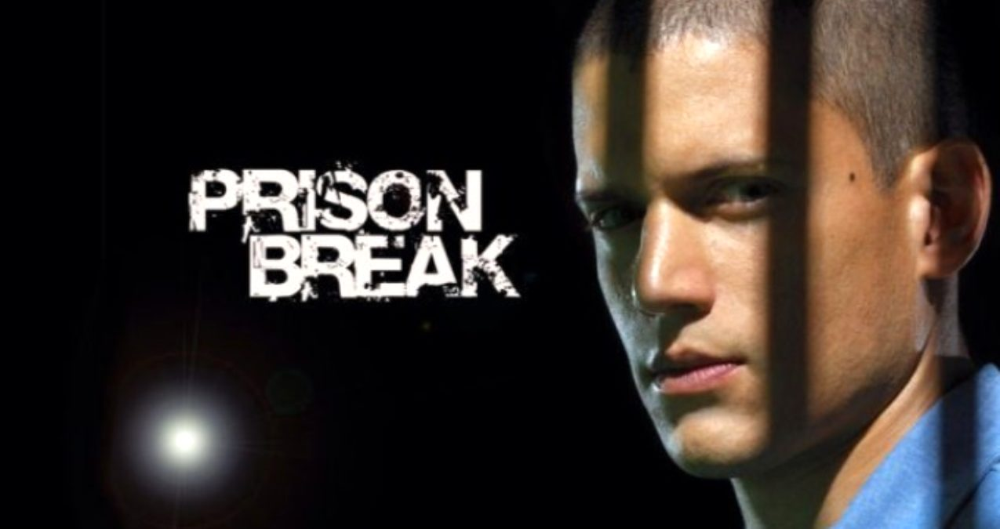

Dilan AKYEL
Hakkımda
Merhaba.Ben Dilan Akyel! Hakkari'de yaşıyorum.Aksiyon , macera izlemeyi ve okumayı severim.Boş zamanlarımda kitap okumayı ve doğayla iç içe olmayı tercih ederim.
Hobilerim
- Kitap okumak
- Çizim yapmak
- Yüzmek
- Doğada yürüyüşe çıkmak
- Film izlemek
İlgi Alanlarım
- Film İzlemek
- Kitap Okumak

Prison Break
İnşaat mühendisi Michael Scofield , komploya uğradığını söyleyen idam cezası mahkumu ağabeyi için bir kaçış planı yapabilmek amacıyla kendini hapse attırır.